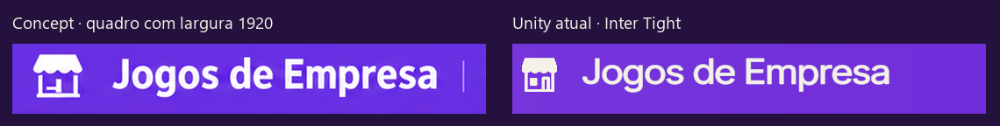
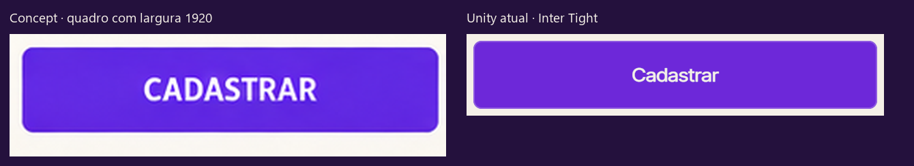
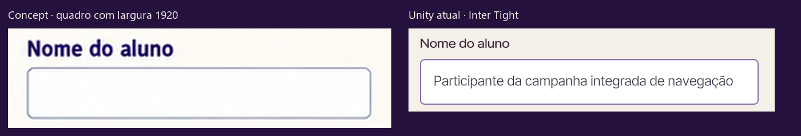
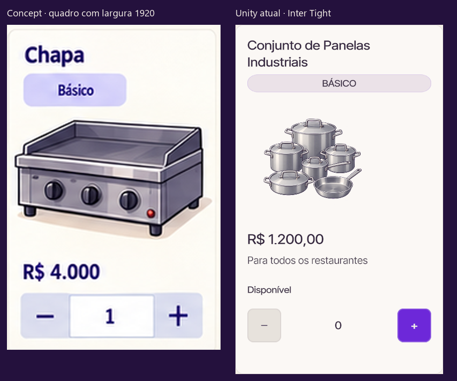
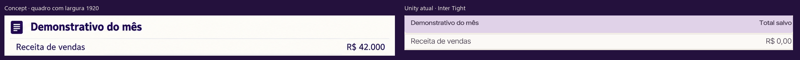
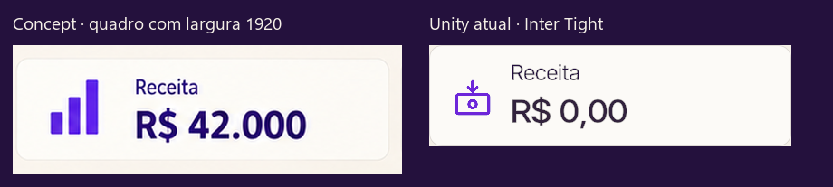
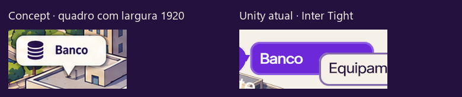
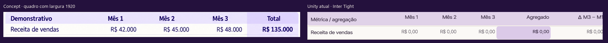

FONT-01 · Inventário e matriz por texto
Baseline atual: Inter Tight no Unity 6000.3.20f1 em Play Mode. As imagens desta página são capturas novas desta execução. Roboto/Roboto Condensed ainda são um contrato planejado. Nenhuma captura comprova a fonte nova.
As regiões do concept são normalizadas por largura de tela 1920 com escala uniforme. Os crops atuais mantêm seus pixels. Diferenças de tamanho/altura são visíveis; não foram igualadas artificialmente. As telas em quadrantes excluem apenas o rótulo externo do quadro. Coordenadas, escalas, hashes e consumidores.
O Editor já possuía uma cena não salva com um TMP branco “Restaurante” sobre a UI. Ele foi inventariado e preservado sem salvar a cena; os seis recortes abaixo evitam essa sobreposição. Os arquivos completos continuam registrando o estado real observado.
Cabeçalho / marca
Marca atual tem menor altura aparente e desenho diferente do concept. Roboto Bold 700; testar 44 atual antes de harmonizar com token 36.

Captura nova: bankruptcy-month-1-summary-1920x1080.png · frame 2460 · escala concept 1.14833 · Canvas/Panel_MonthlyResult/Header/ConceptBrand
Botão de ação
Concept usa letras mais estreitas e altas. Destino Roboto Condensed SemiBold 600; manter tamanho atual 24 como partida e aferir área e altura.

Captura nova: bankruptcy-identification-1920x1080.png · frame 2057 · escala concept 2.31884 · Canvas/Panel_Identification/DesignFrame/Content/Popup/ButtonRegister/Text (TMP)
Input / campo e rótulo
Os campos do concept estão vazios; comparar rótulo/caixa e linha de base. Entrada e placeholder Roboto Regular 400, rótulo Condensed Medium 500. Nome longo permanece dado editável.

Captura nova: bankruptcy-identification-1920x1080.png · frame 2057 · escala concept 2.31884 · Canvas/Panel_Identification/DesignFrame/Content/Popup/InputName/InputName/Text Area/Text
Card de catálogo
Comparar título, etiqueta, preço e ações no contexto. Nome Condensed Bold 700; preço unitário Roboto Regular; categoria Medium 500 e ações SemiBold 600. Conteúdo/catalogo difere do concept.

Captura nova: bankruptcy-equipment-1920x1080.png · frame 2266 · escala concept 2.32446 · Canvas/Panel_Equipment/MainArea_Equipment/CatalogScroll/Viewport/Content/Card_equipment(Clone)/EquipmentName
Tabela financeira
Corpo regular e alinhamento monetário à direita. Roboto Regular 400 nas células; Bold 700 nos totais. Tamanho vigente 24 preservado inicialmente; token de tabela 22 ainda não é tamanho homologado.

Captura nova: bankruptcy-month-1-summary-1920x1080.png · frame 2460 · escala concept 1.14833 · Canvas/Panel_MonthlyResult/LoadedBody/TableScroll/Viewport/Content/Row0/Label
KPI / valor de destaque
Valor atual tem largura e contorno diferentes. Roboto Bold 700; preservar tamanho vigente 38/42 conforme consumidor e medir valores negativos e longos.

Captura nova: bankruptcy-month-1-summary-1920x1080.png · frame 2460 · escala concept 1.14833 · Canvas/Panel_MonthlyResult/LoadedBody/Kpi0/Value
Marcador do mapa / complemento
Legenda nativa do mapa em Condensed SemiBold 600; preservar a medida individual, sem comprimir o RectTransform. O recorte atual mostra proximidade/sobreposição entre legendas a rever no FONT-05. Letreiro BANCO pintado no prédio permanece na ilustração.

Captura nova: bankruptcy-hub-1920x1080.png · frame 2341 · escala concept 1.14833 · Canvas/Panel_Menu/MapMaster/Node_Bank/Card/MapCaption
Tabela trimestral / complemento
Roboto Regular 400 nas células; agregado cells[3] e totais reais em Bold 700. cells[4] é variação, não a coluna total. Preservar 20/22 atuais para iniciar a aferição.

Captura nova: bankruptcy-quarter-1920x1080.png · frame 3283 · escala concept 1.14833 · Canvas/Panel_QuarterlyResult/LoadedBody/TableScroll/Viewport/Content/Row0/Cell3